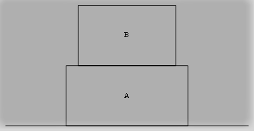

the normal force this act whenever two bodies are in contact with each other . the number of normal forces
that will act on a body depends on the number of surface or points of contact . Number of normal forces acting on the body is equal to the number of points or surface of contact .
How to Calculate the total number of normal forces -

As in the given figure , body A are in contact with two body so the number of normal force act on body A is 2 ( one due to surface and
other due to body B ) similarly body B are in contact with only 1 surface so the number of normal force act on body B is 1 ( due to body
A ).
Note - normal forces are always perpendicular to the surface of contact and if perpendicular to the surface of contact cannot be
drawn then the normal force will act perpendicular to the surface of the body .
if both the condition is false then two component of normal force can be drawn one in the X-direction and one in Y-direction and these
both component are perpendicular to each other .